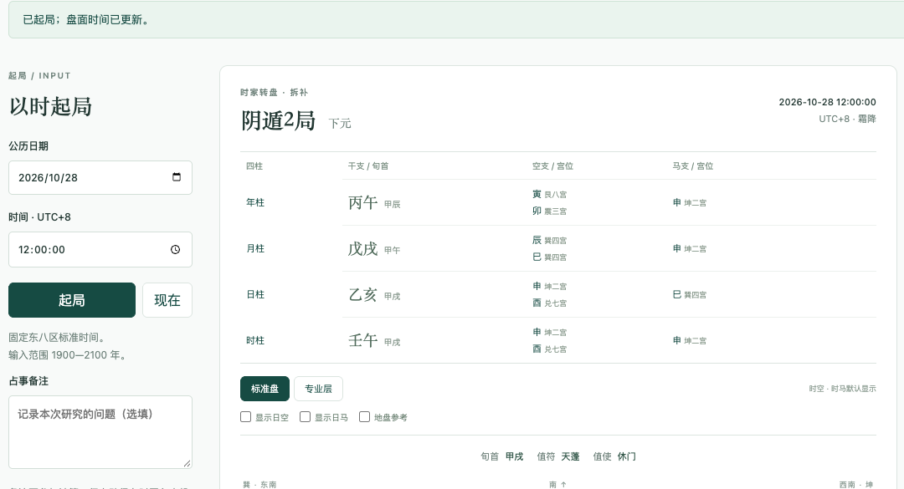
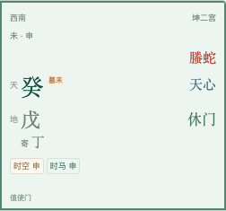
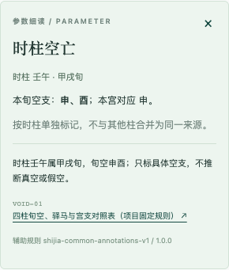

第一次拿到奇门盘，该先看哪里？
第一次打开奇门盘，先核对时间和取法，再辨认局数、值符值使，以及宫位中的天盘干、地盘干、星、门、神。这里用同一张公开演示盘，带你完成起局、查依据和保存文件这一遍。
练习输入为2026-10-28 12:00:00（UTC+8），是公开合成时间。本文说明qimen-ai当前时家转盘拆补法的操作，适合第一次认盘与复核；软件仍为待外部校核的研习预览版。
1. 先确认时间和取法
本工具使用固定UTC+8标准时间、公历1900—2100年，23点换干支日，中五寄坤、天禽随天芮。它不会根据浏览器所在地自动换算时区，也不自动处理真太阳时或历史夏令时。详细约定集中在规则页。
做这次练习时，先只使用下面的公开输入。以后使用其他时间，应先明确它属于什么时间口径；对照其他软件时，按差异核对清单记录双方设置。
2. 输入演示时间并起局
- 在“公历日期”填写
2026-10-28。 - 在“时间 · UTC+8”填写
12:00:00，占事备注留空。 - 点击“起局”，确认盘面上的时间仍为
2026-10-28 12:00:00。 - 展开“本局采用的约定”，核对时家转盘、拆补法及换日、寄宫约定。

3. 先读盘头
盘头集中显示所用时间、节气、阴阳遁与局数、三元、旬首和值符值使。按本版程序，用上述输入可复现：
- 阴遁2局，下元；节气为霜降。
- 旬首甲戌；值符星为天蓬，值使门为休门。
- 日柱乙亥、时柱壬午；四柱信息区另外列出各柱的旬空和驿马。
这些是同一输入在当前规则下的输出，供你检查操作是否一致。它们不是新的独立校盘标准。若你看到的时间或规则不同，先回到输入与约定处核对。
4. 只读一个宫，认清各层
选择坤二宫（西南）。九宫的位置用于定位，宫内每行的名称用于区分层次；手机上的宫位详情在盘面下方。这张演示盘的坤宫可辨认出：
- 天盘干
- 癸。
- 地盘干
- 戊；另有明确写“寄”的地盘丁，分别保留身份。
- 九星
- 天心。
- 八门
- 休门。
- 八神
- 螣蛇。

先把这些字段对应到标签，再看宫内的“时空 申”“时马 申”等辅助标记。查天地盘组合时，按天盘干在前、地盘干在后读取；寄干关系另列。默认《神奇之门》条目和《御定奇门宝鉴》对照各保留自己的名称与来源。
5. 点一个符号，回到条件和来源
- 点击坤二宫内的“时空 申”。
- 在“时柱空亡”详情中，核对时柱壬午、甲戌旬与本旬空支申、酉。
- 区分“本旬有哪两个空支”和“本宫命中哪个空支”：坤宫对应申，兑七宫另标酉。
- 查看条件说明、规则编号
VOID-01和来源链接，辅助规则版本列在详情底部。

想了解其他标记，可以再点“时马”或天盘干查看对象与条件；同宫同时出现空、马等标记时，各自保留依据。标准盘和专业层的切换控制展示内容，基础布盘不因此改变。
6. 保存一份能复查的文件
- 确认这次练习的备注为空，点击“导出 JSON”，保存下载文件。
- 点击“导入 JSON”，选择刚下载的本项目文件。
- 查看提示是否为“基础盘一致；辅助参数一致”。两层分别比较，便于区分布盘与辅助结果的差异。
JSON保存输入、规则与结果，也可能包含你填写的备注，分享前应查看内容。SVG适合另存盘面图片，导出的图片省略占事备注。“保存此盘”则把当前盘存到本机浏览器；需要跨环境复查时，保留导出的文件及其版本信息。
若导入提示有差异或版本不受支持，保留原文件和原版本说明，再按排盘差异核对步骤记录情况。不要把比对提示改写成现实事件的验证结论。
做完这一遍后看什么？
先确认自己能找到完整时间和取法，能说清一个宫里各字段属于哪一层，能从一个标记追到条件与来源，并成功导出文件。接着可读规则与验证边界，或用差异清单练习整理一份可复核记录。
本文围绕认盘和复现操作展开。术语与依据仍需结合来源学习，软件目前没有AI解读或完整断事流程。